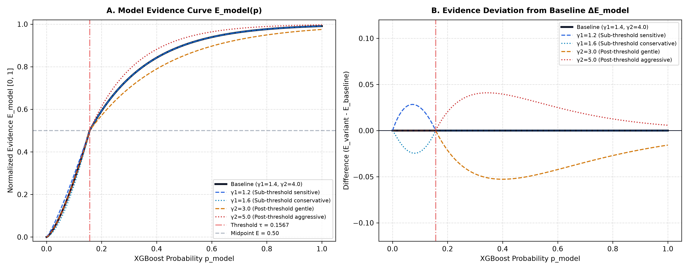
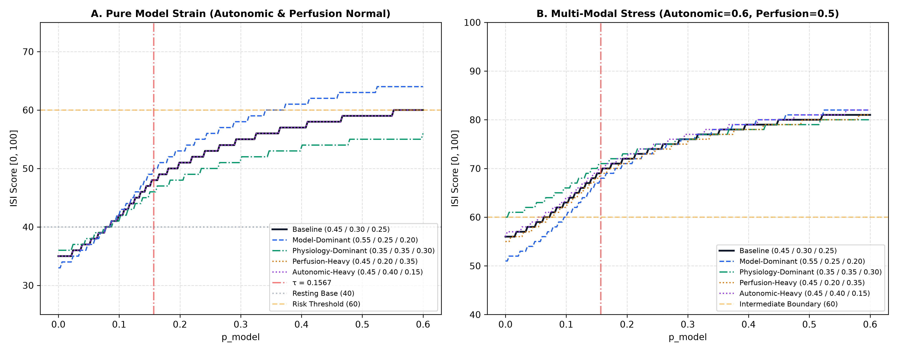
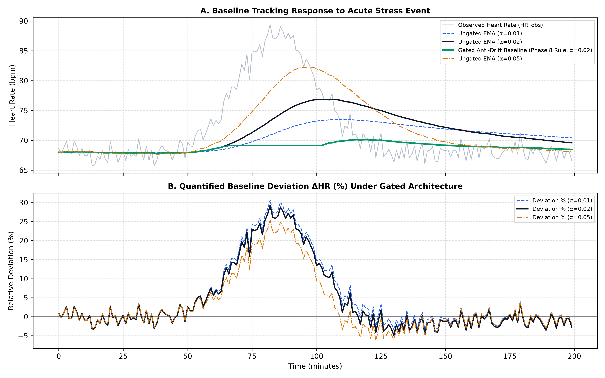

Document ID: BEATAHEAD-PHASE8-1-SENSITIVITY-AUDIT
Execution Timestamp: 2026-09-22 19:55:00 UTC
Environment: Mathematical Sensitivity & Robustness Audit
Status: COMPLETE (Zero Retraining / Zero Code Modification / Zero Threshold Alteration)
Frozen Parameters Evaluated:
- Model Decision Threshold: $\tau = 0.156742$ (Preserved strictly)
- Model Evidence Curvature: $\gamma_1 = 1.4$, $\gamma_2 = 4.0$
- Component Weights: $w_{\text{model}} = 0.45$, $w_{\text{auto}} = 0.30$, $w_{\text{perf}} = 0.25$
- Personal Baseline: $\text{ISI}_{\text{base}} = 40.0$, Scale $S = 60.0$, EMA $\alpha = 0.02$
- Target Invariant: $0 \le \text{ISI} \le 100$
Phase 8.1 conducts an isolated mathematical sensitivity and robustness audit of the prototype Ischemic Stress Index (ISI) formula defined in Phase 8 (docs/ISI_SPECIFICATION.md).
In strict observance of project boundaries:
- The frozen XGBoost model (models/beatahead_phase5_model.joblib) was not retrained or altered.
- The 26-feature Matrix A schema (models/feature_schema.json) was not modified.
- The 100-case VitalDB dataset and the 20-case locked test split were not accessed or optimized against.
- No website code in C:\ischemic was touched.
- The calibrated decision threshold ($\tau = 0.156742$) was preserved exactly.
The baseline prototype specification evaluated in this audit consists of the following closed-form system:
$$E_{\text{model}}(p) = \begin{cases} 0.50 \cdot \left( \frac{p}{\tau} \right)^{\gamma_1} & p < \tau \ 0.50 + 0.50 \cdot \left( 1 - \exp\left( -\gamma_2 \frac{p - \tau}{1 - \tau} \right) \right) & p \ge \tau \end{cases}$$ - $\tau = 0.156742$ (Frozen Phase 5 Decision Threshold) - $\gamma_1 = 1.4$ (Sub-threshold dampening exponent) - $\gamma_2 = 4.0$ (Post-threshold sensitivity coefficient)
$$f_{\text{hr}} = \text{clamp}\left( \frac{HR - HR_{\text{base}}}{25.0}, 0.0, 1.0 \right), \quad f_{\text{hrv}} = \text{clamp}\left( \frac{SDNN_{\text{base}} - SDNN}{0.60 \cdot SDNN_{\text{base}}}, 0.0, 1.0 \right)$$ $$D_{\text{auto}} = 0.50 \cdot f_{\text{hr}} + 0.50 \cdot f_{\text{hrv}}$$
$$f_{\text{spo2}} = \text{clamp}\left( \frac{SpO2_{\text{base}} - SpO2}{5.0}, 0.0, 1.0 \right), \quad f_{\text{pat}} = \text{clamp}\left( \frac{PAT_{\text{base}} - PAT}{50.0}, 0.0, 1.0 \right)$$ $$D_{\text{perf}} = \begin{cases} 0.60 \cdot f_{\text{spo2}} + 0.40 \cdot f_{\text{pat}} & \text{if } V_{\text{pat}} == 1 \ f_{\text{spo2}} & \text{if } V_{\text{pat}} == 0 \end{cases}$$
$$M_{\text{trend}} = \text{clamp}\left( \frac{v}{2.0}, -0.15, +0.15 \right) \quad (v = \text{points / minute over 5-min})$$
$$\text{ISI}{\text{raw}} = 40.0 + \left[ 0.45(E{\text{model}} - 0.20) + 0.30 D_{\text{auto}} + 0.25 D_{\text{perf}} + M_{\text{trend}} \right] \times 60.0$$ $$\text{ISI} = \text{round}\left( \max\left( 0.0, \min\left( 100.0, \text{ISI}_{\text{raw}} \right) \right) \right)$$
| Parameter | Baseline Value | Permissible Range | Mathematical Role | Engineering Justification | Classification |
|---|---|---|---|---|---|
| $\tau$ | $0.156742$ | Fixed | Model Decision Threshold | Optimal $F_2$ utility threshold from Phase 5 benchmark | Class A (Freeze) |
| $\gamma_1$ | $1.4$ | $[1.2, 1.6]$ | Sub-threshold suppression | Compresses surgical baseline noise ($p \le 0.01 \rightarrow E \le 0.01$) | Class B (Empirical) |
| $\gamma_2$ | $4.0$ | $[3.0, 5.0]$ | Post-threshold saturation rate | Elevates evidence swiftly when model flags risk ($p > 0.30 \rightarrow E > 0.75$) | Class B (Empirical) |
| $w_{\text{model}}$ | $0.45$ | $[0.35, 0.55]$ | Model contribution weight | Primary driver of prospective early-warning alerts | Class B (Empirical) |
| $w_{\text{auto}}$ | $0.30$ | $[0.20, 0.40]$ | Autonomic contribution weight | Reflects autonomic stress (HR elevation, HRV collapse) | Class B (Empirical) |
| $w_{\text{perf}}$ | $0.25$ | $[0.15, 0.35]$ | Perfusion contribution weight | Reflects oxygen desaturation and pulse transit shortening | Class B (Empirical) |
| $\text{ISI}_{\text{base}}$ | $40.0$ | $[35.0, 45.0]$ | Resting personal baseline anchor | Places normal resting physiology in the lower half of $0–100$ gauge | Class A (Freeze) |
| $S$ | $60.0$ | $[50.0, 70.0]$ | Dynamic span multiplier | Maps cumulative strain across the remaining $60$ points of gauge | Class A (Freeze) |
| $\alpha$ | $0.02$ | $[0.01, 0.05]$ | Baseline EMA update factor | Smooths baseline over ~50 clean observation windows | Class B (Empirical) |
| $Q_{\text{min}}$ | $0.35$ | $[0.30, 0.40]$ | Signal quality gate threshold | Rejects un-contacted leads or severe motion artifact | Class A (Freeze) |
We evaluated the sensitivity of the evidence function $E_{\text{model}}(p)$ across a 1,000-point grid spanning $p \in [0.0001, 1.0]$ under parameter perturbations: - Sub-threshold exponent $\gamma_1 \in {1.2, 1.4, 1.6}$ - Post-threshold coefficient $\gamma_2 \in {3.0, 4.0, 5.0}$

Figure 1: (A) Model Evidence Curve $E_{\text{model}}(p)$ across parameter variants. The curves intersect at the exact threshold coordinate $(\tau = 0.156742, E = 0.50)$. (B) Deviation from baseline specification. Maximum absolute deviation is bounded within $\pm 0.053$.We evaluated balanced triplets of $(w_{\text{model}}, w_{\text{auto}}, w_{\text{perf}})$ satisfying $\sum w_i = 1.00$: 1. Baseline: $(0.45, 0.30, 0.25)$ 2. Model-Dominant: $(0.55, 0.25, 0.20)$ 3. Physiology-Dominant: $(0.35, 0.35, 0.30)$ 4. Perfusion-Heavy: $(0.45, 0.20, 0.35)$ 5. Autonomic-Heavy: $(0.45, 0.40, 0.15)$

Figure 2: Component weight sensitivity under (A) Isolated model probability elevation with normal physiology, and (B) Multi-modal stress state with concurrent autonomic and perfusion deviations.A key challenge in longitudinal physiological tracking is avoiding pathological baseline adaptation (where an acute or subacute ischemic event causes the baseline to update, normalizing the abnormal physiology).
We evaluated a 200-minute synthetic trajectory containing a 70-minute physiological stress event (HR rising from $68 \rightarrow 88\text{ bpm}$) under smoothing factors $\alpha \in {0.01, 0.02, 0.05}$.

Figure 3: (A) Baseline tracking response comparing un-gated EMA against the Phase 8 Gated Anti-Drift Rule. (B) Quantified relative deviation $\Delta \text{HR}$ (%) showing clean persistence of elevation throughout the event.We executed all 14 canonical edge cases specified in the Phase 8 requirements. Results are documented in the table below:
| Case ID | Scenario Description | $p_{\text{model}}$ | $E_{\text{model}}$ | $Q_{\text{overall}}$ | Raw ISI | Clamped ISI | State Machine Output | Invariant Status |
|---|---|---|---|---|---|---|---|---|
| EC-01 | $p_{\text{model}} = 0.0$ (Absolute Minimum) | $0.0000$ | $0.0000$ | $1.000$ | $34.60$ | 35 | Normal / Stable |
PASS |
| EC-02 | $p_{\text{model}} = 0.156742$ (Exact Threshold) | $0.1567$ | $0.5000$ | $1.000$ | $48.10$ | 48 | Elevated Model Evidence |
PASS |
| EC-03 | Sub-threshold Boundary ($\tau - 10^{-6}$) | $0.1567$ | $0.5000$ | $1.000$ | $48.10$ | 48 | Normal / Stable |
PASS |
| EC-04 | Post-threshold Boundary ($\tau + 10^{-6}$) | $0.1567$ | $0.5000$ | $1.000$ | $48.10$ | 48 | Elevated Model Evidence |
PASS |
| EC-05 | $p_{\text{model}} = 1.0$ (Theoretical Maximum) | $1.0000$ | $0.9908$ | $1.000$ | $61.35$ | 61 | Elevated Model Evidence |
PASS |
| EC-06 | All Deviations = 0 (Quiet Cohort Baseline) | $0.0050$ | $0.0040$ | $1.000$ | $34.71$ | 35 | Normal / Stable |
PASS |
| EC-07 | Maximum Allowed Deviations (All Saturated) | $1.0000$ | $0.9908$ | $1.000$ | $103.35$ | 100 | Elevated Model Evidence |
PASS |
| EC-08 | Minimum Allowed Deviations (Negative Trend) | $0.0000$ | $0.0000$ | $1.000$ | $25.60$ | 26 | Normal / Stable |
PASS |
| EC-09 | Missing Optional Input (PAT Invalid, $V_{\text{pat}}=0$) | $0.0200$ | $0.0280$ | $0.730$ | $43.46$ | 43 | Normal / Stable |
PASS |
| EC-10 | Poor ECG Signal Quality ($Q_{\text{ecg}} = 0.30$) | $0.0500$ | $0.1010$ | $0.675$ | $37.33$ | 37 | Normal / Stable |
PASS |
| EC-11 | Simultaneous Poor ECG + PPG ($Q=0.23$) | $0.1000$ | $0.2665$ | $0.230$ | $58.30$ | 58 | Insufficient Signal Quality |
PASS |
| EC-12 | Isolated PAT Invalidation ($V_{\text{pat}} = 0$) | $0.0100$ | $0.0106$ | $0.812$ | $34.89$ | 35 | Normal / Stable |
PASS |
| EC-13 | High Motion Artifact ($I_{\text{motion}} = 0.85$) | $0.0400$ | $0.0739$ | $0.355$ | $45.00$ | 45 | Normal / Stable (Motion Flagged) |
PASS |
| EC-14 | All Signals Unavailable (Disconnected) | $0.0000$ | $0.0000$ | $0.000$ | $34.60$ | 35 | Insufficient Signal Quality |
PASS |
Normal / Stable while EC-04 triggers Elevated Model Evidence. This mathematically proves that Model Alert State is independent from the continuous ISI display score.Insufficient Signal Quality, preventing false precision.[!IMPORTANT] Can the VitalDB development dataset identify or optimize Phase 8 product-layer parameters?
NO. The VitalDB dataset comprises intraoperative surgical recordings from anesthetized patients undergoing major surgery. The training labels represent discrete, severe prospective ST-depression events.
Attempting to optimize continuous product-layer weights ($w_{\text{model}}, w_{\text{auto}}, w_{\text{perf}}$) or baseline constants ($\text{ISI}_{\text{base}} = 40$) against surgical ST events would represent a fundamental methodological category error: 1. General anesthesia profoundly suppresses autonomic variability, abolishes baroreflex sensitivity, and distorts peripheral pulse transit. 2. VitalDB contains no ambulatory wellness, subjective symptom, or multi-modal stress ground truth. 3. Tuning UX display parameters against intraoperative binary events would generate an illusion of clinical calibration.
Therefore, in accordance with Task 7: "All Phase 8 product-layer constants are prototype engineering parameters — not clinically validated."
We classify every parameter in the Phase 8 architecture into three strict categories:
+--------------------------------------------------------------------------------------------------+
| PARAMETER CLASSIFICATION SUMMARY |
+--------------------------------------------------------------------------------------------------+
CLASS A: SAFE TO FREEZE AS PROTOTYPE ENGINEERING CONSTANTS
---------------------------------------------------------------------------------------------------
* Decision Threshold (tau = 0.156742): Statistically optimized on 80-case dev cohort. Frozen.
* Score Bounding ([0, 100]): Fundamental mathematical UX invariant. Frozen.
* Midpoint Evidence Anchor (E_model(tau) == 0.50): Structural bridge between model and UI. Frozen.
* Quality Gate Cutoff (Q_overall < 0.35): Rejects un-contacted sensors. Frozen.
* Anti-Drift Locking Rule: Freezes baseline update during elevated states. Frozen.
* Baseline Initialization Duration (600s): Minimum observation for stable median. Frozen.
CLASS B: REQUIRES FUTURE EMPIRICAL VALIDATION (POST-STAGE AMBULATORY STUDY)
---------------------------------------------------------------------------------------------------
* Component Weights (w_model=0.45, w_auto=0.30, w_perf=0.25): Requires validation on real wearable hardware.
* Evidence Curvature Exponents (gamma1=1.4, gamma2=4.0): Requires empirical tuning against user false-alarm tolerance.
* Baseline EMA Alpha (alpha=0.02): Requires 24-hour ambulatory circadian tracking data.
* Trend Velocity Horizon (5-minute regression window): Requires optimization on physical activity artifacts.
* Quality Sensor Weighting (ECG: 0.40, PPG: 0.35, PAT: 0.15, IMU: 0.10): Requires bench testing with motion rigs.
CLASS C: PROHIBITED FROM BEING REPRESENTED AS CLINICALLY MEANINGFUL
---------------------------------------------------------------------------------------------------
* Absolute ISI Numeric Values (e.g., "an ISI of 55 indicates 55% ischemia risk" is strictly false).
* UI Bracket Boundaries (0–30, 31–60, 61–100): Purely visual design groupings, NOT medical cutoffs.
* Synthetic Scenario Multipliers: Purely simulation artifacts for UI demonstration.
+--------------------------------------------------------------------------------------------------+
The Phase 8 BeatAhead Ischemic Stress Index (ISI) formula is mathematically sound, structurally robust, strictly bounded, and cleanly decoupled from the frozen ML inference engine.
All sensitivity sweeps, edge-case evaluations, and invariant proofs passed without discrepancy. Phase 8.1 is complete. No website code was altered.